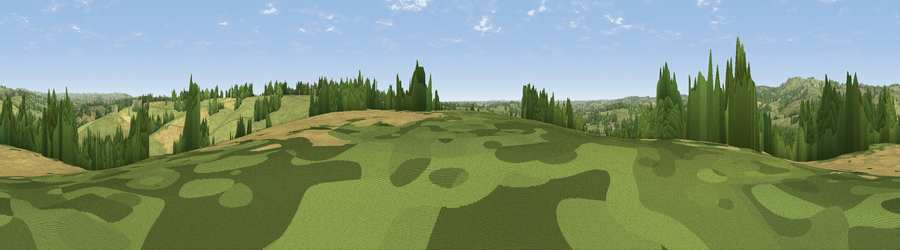

Viewpoint near Ellastone
#32052 in England · top 53% of its area beats it · near Ellastone · footpathWhere it is
The exact computed spot (SK 14525 42675). Click the marker for map links.
Public access: a public right of way passes within 56 m of this spot. Computed from Natural England's CRoW access layer and OpenStreetMap rights of way — not the legal definitive map. Always verify locally.
The view, rendered

A 360° render of this exact spot computed from the terrain model, tree cover and land cover — summer colours, afternoon light, calibrated against photographs of famous viewpoints. Real trees, hedges and buildings will differ in detail.
The panorama
Grey silhouette: terrain skyline in each direction (720 bearings, Earth curvature and refraction included). Dashed green: skyline with trees (+15 m) and buildings (+8 m) as obstacles. Blue strip: how far the ground is visible on each bearing.
Where the view opens
Wedge length = distance to the farthest visible ground on that bearing (vegetation-aware). Rings at 10, 25 and 50 km.
What fills the view
69% grassland · 17% cropland · 14% woodland ·
Angular shares of the visible panorama (visual magnitude), not map area. Landscape diversity 0.38 (0–1 Shannon).
Key numbers
More beautiful places nearby
The staircase of upgrades: each row has a higher view potential than everything closer. Driving times are estimates from straight-line distance, calibrated against real road routing — check an actual route before setting out.
| Place | Direction | Drive | Score |
|---|---|---|---|
| Viewpoint near Stanton | NW · 2 km | ~6 min | 38.4 |
| Viewpoint near Denstone | WSW · 4 km | ~9 min | 43.0 |
| Viewpoint near Wootton | NW · 5 km | ~11 min | 66.1 |
| Viewpoint near Wootton | NW · 6 km | ~12 min | 74.4 |
| Viewpoint near Wootton | NW · 6 km | ~13 min | 74.8 |
| Tissington Hill | N · 10 km | ~19 min | 75.5 |
| Viewpoint near Mow Cop | WNW · 32 km | ~50 min | 78.9 |
| Viewpoint near Mow Cop | WNW · 32 km | ~50 min | 80.2 |
52.98123, -1.78511 · source: screening · position refined by local search. Computed location — check access rights before visiting.